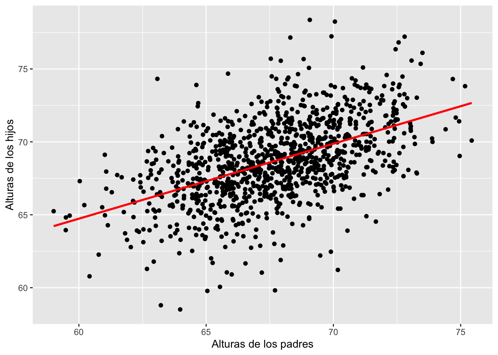
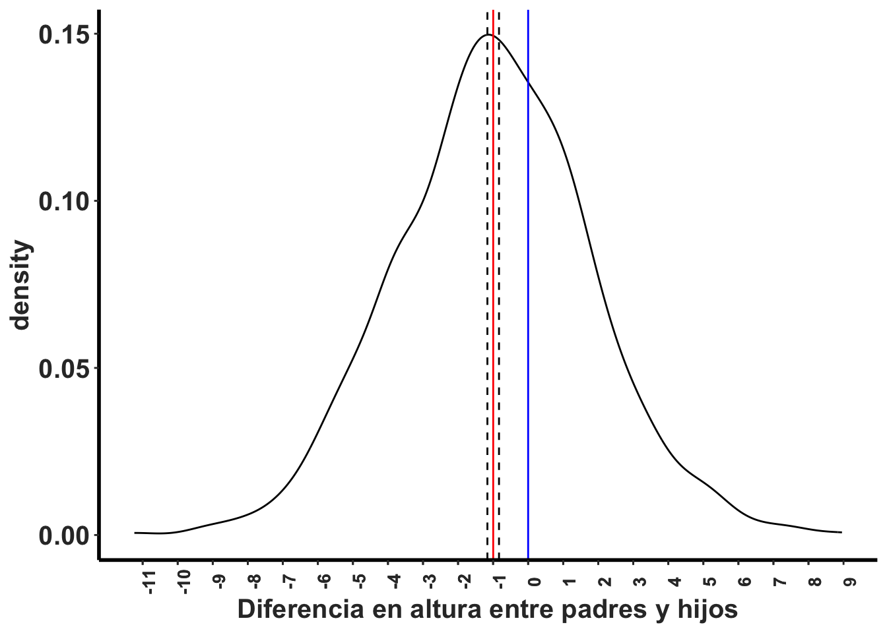
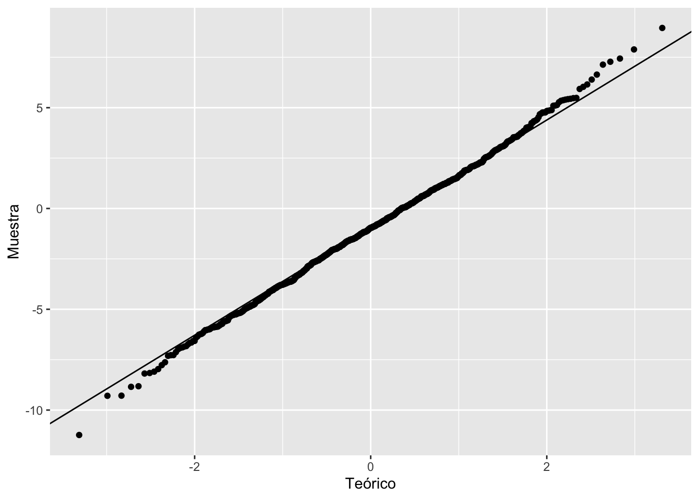

Capítulo 14 Prueba de t para Datos Pareados
Fecha de la última revisión
## [1] "2026-08-01"14.1 Datos dependientes
Si tienes datos que no son independientes, es necesario usar la prueba con datos pareados (paired t-test). Cuando se habla de datos no independientes, es que hay evidencia de que los datos pueden estar relacionados de alguna forma. En el siguiente ejemplo tenemos la altura de los padres y la altura del hijo. Hay evidencia de que la genética influye en la altura de los humanos, y también influye el ambiente. Si el ambiente (nutrición, etc.) fuera la única variable que influye sobre la altura, podría ser que no se encontrara una relación entre la altura del padre y la del hijo. Si la genética fuera la única variable que impacta la altura de los humanos, deberíamos encontrar una correlación muy fuerte entre las alturas de los padres y los hijos.
Usa la prueba de t para datos pareados cuando cada observación de un grupo está emparejada de forma natural con una observación del otro (mediciones antes/después en el mismo individuo, dos mediciones sobre la misma unidad, gemelos, etc.). Si los dos grupos son independientes, se usa la prueba de t independiente (capítulo siguiente).
Los datos provienen del paquete UsingR y el archivo se llama father.son
Primero mire los datos y los nombres de las variables.
Paired Two-Sample T-test
## fheight sheight
## 1 65.04851 59.77827
## 2 63.25094 63.21404
## 3 64.95532 63.34242
## 4 65.75250 62.79238
## 5 61.13723 64.28113
## 6 63.02254 64.24221
#install.packages("UsingR", dependencies = TRUE)
#father.son14.2 Visualizar la correlación
Antes de hacer la prueba es recomendable hacer un gráfico de puntos para visualizar los datos y observar si hay un patrón. Vemos que, a medida que aumenta la altura de los padres, los hijos tienden a ser más altos. Parece que hay una correlación entre la altura de los hijos y la altura del padre. Por consiguiente, la altura de los hijos no es independiente de la altura de los padres. Aunque hay evidencia de que el ambiente, tal como el acceso a recursos (comida, leche, etc.), tiene impacto sobre la altura de los humanos, la genética también tiene impacto sobre la altura, y la genética no es una variable asignada al azar.
library(ggplot2)
ggplot(father.son, aes(fheight, sheight))+
geom_point()+
geom_smooth(method="lm", se=FALSE, colour="red")+
#rlt_theme+
xlab("Alturas de los padres")+
ylab("Alturas de los hijos")
14.3 La prueba de t-pareado
La prueba de t-con datos pareados es la misma que la prueba de t con un grupo, t.test().
La hipótesis nula es que la diferencia entre los datos dependientes es igual a cero. La d se refiere a la diferencia entre los pares de datos. Nota entonces que el análisis se hace evaluando si el promedio de las diferencias es igual a cero. Nota que el valor de t es absoluto \(\left|t\right|\), un valor negativo es igual que un valor positivo.
- Ho: \(\overline{x_d}=0\)
- Ha: \(\overline{x_d}≠0\)
La prueba de t con datos pareados.
\[\left|t\right|=\frac{\bar{d}}{s_d/\sqrt{n}}\]
En la prueba de t pareada, \(\bar{d}\) es el promedio de las diferencias entre cada par, \(s_d\) es la desviación estándar de esas diferencias y \(n\) es el número de pares. Es, en esencia, una prueba de t de una muestra aplicada a las diferencias, con hipótesis nula \(\overline{x_d}=0\).
Si el valor absoluto de las estadísticas de la prueba \(\begin{array}{l}t=\left|t\right|\\\end{array}\) es mayor que el valor crítico, entonces la diferencia es significativa. El nivel crítico del valor p corresponde al indicado en la tabla de la prueba, tomando en cuenta el grado de libertad, la cantidad de error I y si es de un lado o de ambos lados.
Las opciones para esta prueba son las siguientes (en rojo)
- t.test(x, y,
- alternative = c(two.sided, less, greater),
- mu =, paired = FALSE, var.equal = FALSE,
- conf.level = 0.95, …).
El resultado: el valor de \(\left|t\right|\) observado es de 11.789, con 1077 grados de libertad (n=1078) y un valor de p < 0.0001. Por consiguiente, se rechaza la hipótesis nula. Como en el código se calcula sheight - fheight, el intervalo de confianza del promedio es de 0.831 a 1.163, con un promedio de 0.99. Esto significa que los hijos tienden a ser una pulgada (0.99) más altos que los padres.
t.test(father.son$sheight, father.son$fheight, paired=TRUE)##
## Paired t-test
##
## data: father.son$sheight and father.son$fheight
## t = 11.789, df = 1077, p-value < 2.2e-16
## alternative hypothesis: true mean difference is not equal to 0
## 95 percent confidence interval:
## 0.8310296 1.1629160
## sample estimates:
## mean difference
## 0.996972814.4 Visualizar la diferencias
Podemos visualizar la diferencia entre los hijos y los padres. Vemos el promedio que tendríamos si no hubiese diferencia (la línea azul), que corresponde a nuestra hipótesis nula, y el estimado (el promedio de las diferencias, en rojo, con el intervalo de confianza en las líneas entrecortadas). Si nuestro estimado (el intervalo de confianza de 95%) hubiese incluido la línea azul, la prueba no sería significativa y no se rechazaría la hipótesis nula.
father.son$heightDiff<-father.son$fheight-father.son$sheight # para calcular la diferencia entre el padre y el hijo.
ggplot(father.son, aes(x=fheight-sheight))+
geom_density()+
geom_vline(xintercept = mean(father.son$heightDiff), colour="red")+
geom_vline(xintercept = mean(father.son$heightDiff) + 1.96 * c(-1, 1) * sd(father.son$heightDiff) / sqrt(nrow(father.son)), linetype = 2) +
geom_vline(xintercept = 0, colour="blue")+
rlt_theme+
xlab("Diferencia en altura entre padres y hijos")+
scale_x_continuous(breaks = round(seq(min(father.son$heightDiff), max(father.son$heightDiff), by = .5),0))+
theme(axis.text.x = element_text(angle = 90))
14.4.1 Supuesto de normalidad
¿Qué método usamos para determinar si las diferencias cumplen con la normalidad?
father.son$heightDiff<-father.son$fheight-father.son$sheight # para calcular la diferencia entre el padre y el hijo.
shapiro.test(father.son$heightDiff)##
## Shapiro-Wilk normality test
##
## data: father.son$heightDiff
## W = 0.99853, p-value = 0.5087En la prueba pareada, el supuesto de normalidad se evalúa sobre las diferencias (\(d\)), no sobre cada grupo por separado. Combina el resultado de Shapiro-Wilk con la inspección visual del gráfico Q-Q de las diferencias.
Gráfico Q-Q de las diferencias
library(ggplot2)
ggplot(father.son, aes(sample=heightDiff))+
stat_qq()+
stat_qq_line()+
xlab("Teórico")+
ylab("Muestra")
14.6 Ejercicio de clase
Vamos a evaluar si la cantidad de hijos cambia entre su abuela y su madre.
abuela=c(4,3,5, 2,3,4,
3,3,4, 2,3,2,
3, 3, 3, 3, 8, 3,
6, 3, 2, 5)
madre=c(2, 1,1, 2, 2,2,
1, 2, 2, 1,3, 1,
2, 1, 2, 1, 8, 2,
2, 3, 3, 4)
df=data.frame(abuela,madre)
df## abuela madre
## 1 4 2
## 2 3 1
## 3 5 1
## 4 2 2
## 5 3 2
## 6 4 2
## 7 3 1
## 8 3 2
## 9 4 2
## 10 2 1
## 11 3 3
## 12 2 1
## 13 3 2
## 14 3 1
## 15 3 2
## 16 3 1
## 17 8 8
## 18 3 2
## 19 6 2
## 20 3 3
## 21 2 3
## 22 5 4
df$diff=df$abuela-df$madre
df## abuela madre diff
## 1 4 2 2
## 2 3 1 2
## 3 5 1 4
## 4 2 2 0
## 5 3 2 1
## 6 4 2 2
## 7 3 1 2
## 8 3 2 1
## 9 4 2 2
## 10 2 1 1
## 11 3 3 0
## 12 2 1 1
## 13 3 2 1
## 14 3 1 2
## 15 3 2 1
## 16 3 1 2
## 17 8 8 0
## 18 3 2 1
## 19 6 2 4
## 20 3 3 0
## 21 2 3 -1
## 22 5 4 1
mean(df$diff)## [1] 1.318182
t.test(df$abuela,df$madre, paired=TRUE)##
## Paired t-test
##
## data: df$abuela and df$madre
## t = 5.1076, df = 21, p-value = 4.651e-05
## alternative hypothesis: true mean difference is not equal to 0
## 95 percent confidence interval:
## 0.7814656 1.8548980
## sample estimates:
## mean difference
## 1.318182## # A tibble: 2 × 2
## abuela madre
## <dbl> <dbl>
## 1 4 2
## 2 4 414.7 Cultivador de Toronjas con parcelas pareadas
Un cultivador heredó 18 parcelas con árboles de toronjas, cada una en un municipio diferente. Él quiere saber si al añadir abono la cosecha de toronjas aumenta. Podría decidir seleccionar 9 de estas parcelas para añadir abono y dejar las otras 9 sin abono. El problema con este diseño experimental es que es bien conocido que el suelo varía de un sitio a otro y que el clima también varía. Es más apropiado que él divida cada parcela en 2, y que la mitad reciba el abono y la otra mitad sirva de control (sin abono). ¿Cuál será el efecto del abono sobre la producción de toronjas en parcelas pareadas en Puerto Rico?
La cantidad de toronjas producidas por árbol en fincas pareadas: cada finca tiene una parcela con abono y otra parcela sin abono. Tenemos 18 sitios diferentes en PR donde se probó el efecto del abono sobre la producción de toronjas; en la tabla se muestran solamente los primeros pares de valores. Cada parcela es del mismo tamaño y con la misma cantidad de árboles. Los datos completos están en el próximo chunk.
library(tibble)
library(huxtable)
Toronja=tribble(
~Fertilizante, ~Sin_Fertilizante, ~Municipio,
2250, 1920 , "Utuado",
2410, 2020, "Cabo Rojo",
2260, 2060, "Manati",
2200, 1960, "Yabucoa",
2360, 1960, "Humacao",
2320, 2140,"Caguas",
2240, 1980, "San Juan",
2300, 1940, "Jayuya",
2090, 1790,"Ponce"
)
Toronja
Toronja$dif_F_NF=Toronja$Fertilizante-Toronja$Sin_Fertilizante
Toronja
library(ggplot2)
ggplot(Toronja, aes(dif_F_NF))+
geom_histogram()
ggsave("Mi_super_grafico.png")
huxtable(Toronja)%>%
theme_article(header_col = TRUE)%>%
set_bottom_border(row = 1, col = everywhere, value = 1)%>%
set_caption("La cantidad de toronjas producidas en parceles en diferentes municipios")
- Primero añadimos los datos en listas y la unimos en un df.
- Se calcula la diferencias de producción de toronjas por parcela.
- Cual es el promedio de las diferencias.
- Hacer la prueba de t con datos pareado.
El resultado: el valor de t observado es de 8.80, con 17 grados de libertad (n=18) y un valor de p < 0.0001. Por consiguiente, se rechaza la hipótesis nula. El intervalo de confianza del promedio es 198.5 – 323.7, con un promedio de 261. Esto significa que al añadir fertilizante la producción de toronjas aumentó en promedio 261 toronjas.
Fert=c(2250,2410, 2260,2200, 2360,
2320,2240,2300,2090, 2250,2410, 2260,2200, 2360,
2320,2240,2300,2090)
#Fert
SFert=c(1920,2020,2060,1960,
1960,2140,1980,1940,2100, 1920,2020,2060,1960,
1960,2140,1980,1940,2100)
#SFert
df=data.frame(Fert,SFert)
df$diff_produccion=df$Fert-df$SFert
mean(df$diff_produccion) # el promedio de las diferencias
t.test(df$Fert,df$SFert, paired=TRUE)14.8 El número de Hojas por planta en diferentes momentos (tiempo).
Los datos representan cuántas hojas tenían las mismas plantas en diferentes momentos de su muestreo. Por consiguiente, los datos no son independientes. Provienen de muestreos realizados en El Yunque en una pequeña orquídea epífita, Lepanthes eltoroensis Stimson. Aquí una foto de la planta.
El archivo de datos tiene información sobre la cantidad de hojas que tiene cada una de las plantas marcadas después del huracán Georges (1998). Las plantas fueron muestreadas cada 6 meses, comenzando 6 meses después del huracán, por 6 años (13 muestreos). Se siguieron 1084 plantas distintas, aunque no todas fueron muestreadas en cada tiempo. Cada fila representa un individuo; si no hay información en un tiempo, puede ser que la planta a) no fuera encontrada en ese muestreo, b) estuviera muerta, o c) fuera antes de que la planta creciera (todavía no había germinado).
library(readr)
Lepanthes_eltoroensis_Georges_STUDENT <- read_csv("Data_files_csv/Lepanthes_eltoroensis_Georges_STUDENT.csv")
Lep=Lepanthes_eltoroensis_Georges_STUDENT
head(Lep)
library(tidyverse)
length(Lep$T1)-
Compara si la cantidad de hojas por planta es igual entre el primer muestreo (1) y el segundo muestreo (2), y contesta las siguientes preguntas.
Se someterá un documento html en Edmodo contestando las siguientes preguntas.
¿Cuáles son sus conclusiones?
- ¿Cuántas plantas fueron muestreadas en ambos periodos?
- ¿Cuál es la hipótesis nula?
- Haz la prueba correcta para evaluar la hipótesis.
- ¿Cuál es el valor de t observado?
- ¿Cuál es el promedio de las diferencias entre un muestreo y el otro?
- ¿Cuál es el intervalo de confianza del promedio?
- ¿Cumple con el supuesto de esta prueba? Enseña la evidencia.
- ¿Se rechaza o no la hipótesis nula?
- ¿las plantas en el tiempo 2 tienen más hojas?
- ¿las plantas en el tiempo 2 tienen menos hojas?
- ¿las plantas tienen la misma cantidad de hojas?
14.9 Ansiedad y Alacranes
Con un índice de ansiedad: mientras más alto el número, más ansiosa está la persona.
picture=c(1,2,5,2,8,4,5,0,7)
dead=c(15,15,17,10,10,10,18,16,11)
mean(picture)
mean(dead)
alacran=data.frame(picture,dead)
head(alacran)
t.test(alacran$dead, alacran$picture,paired=FALSE)14.10 Supuestos de la prueba de t con datos pareados.
Los supuestos de la prueba de t para datos pareados son:
- Que la variable dependiente tome valores continuos (de intervalo o de razón).
- Que los pares de observaciones sean independientes entre sí.
- Que las diferencias entre los pares sean aproximadamente normales.
- Que no haya valores atípicos extremos en las diferencias.